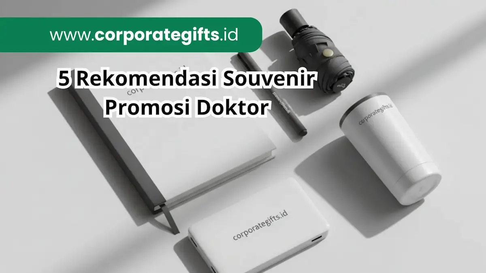

Corporate Gifts ID - Souvenir promosi doktor adalah cenderamata eksklusif yang diberikan sebagai bentuk apresiasi atas pencapaian akademik tertinggi dalam sidang terbuka maupun wisuda. Beberapa rekomendasi souvenir promosi doktor terbaik dan elegan meliputi plakat kristal 3D, pulpen metal grafir, tote bag kulit premium, bookmark logam, dan dompet kulit. Pemilihan souvenir yang tepat tidak hanya berfungsi sebagai kenang-kenangan, tetapi juga mencerminkan citra profesional institusi dan bentuk penghormatan tertinggi bagi lulusan.
Dalam memilih souvenir, kualitas dan eksklusivitas menjadi faktor yang sangat penting. Produk yang elegan akan meninggalkan kesan mendalam bagi penerimanya, sekaligus mencerminkan identitas akademik yang berkelas. Berikut ini adalah rekomendasi souvenir promosi doktor yang bisa dijadikan referensi untuk acara wisuda atau sidang promosi.
Poin Kunci Souvenir Promosi Doktor:
- Prestise Akademik Tertinggi: Cinderamata gelar doktor harus mencerminkan kedalaman riset dan martabat keilmuan pascasarjana.
- Personalisasi Nama & Gelar: Penerapan grafir laser presisi untuk nama doktor baru, gelar S3, serta logo universitas.
- Material Mewah Tahan Lama: Penggunaan kristal optik K9, logam anti-karat, dan kulit sintetis premium bertekstur elegan.
- Presentasi Packaging Eksklusif: Dilengkapi hardbox velvet beludru bermagnetik dengan sentuhan foil emas untuk serah terima resmi.
- Nilai Fungsional Jangka Panjang: Benda cinderamata yang dapat digunakan sehari-hari di ruang kerja atau ruang dosen.
Pentingnya Souvenir Eksklusif dalam Perayaan Gelar Doktor
Gelar doktor (Dr. / Ph.D.) adalah puncak pencapaian akademik yang diraih melalui dedikasi bertahun-tahun, riset disertasi mendalam, dan ujian promosi terbuka di hadapan dewan promotor serta senat universitas. Oleh karena itu, cinderamata yang diserahkan dalam momentum sakral ini wajib memiliki standar kemewahan yang sebanding dengan prestise gelar tersebut.
1. Plakat Kristal 3D Laser Engraving
Plakat merupakan pilihan klasik untuk penghargaan akademik, tetapi kini semakin berkembang dengan sentuhan desain modern. Plakat kristal 3D laser engraving mampu menampilkan detail logo universitas, nama penerima, judul disertasi, hingga kutipan motivasi dengan presisi tinggi dan mewah.
Banyak fakultas dan program pascasarjana di Indonesia mulai beralih dari plakat kayu tradisional ke plakat kristal optik K9 karena tampilannya yang jauh lebih modern, berkilau, dan premium. Produk ini sangat cocok dipajang di ruang kerja kantor atau meja display rumah sebagai simbol pencapaian akademik yang abadi.

Plakat kristal 3D laser engraving dan pulpen metal personalisasi grafir nama wisudawan doktor.
2. Pulpen Metal dengan Grafir Nama
Souvenir sederhana bisa menjadi sangat istimewa jika diberi sentuhan personal. Pulpen metal premium yang dilengkapi dengan grafir nama penerima bergelar doktor atau logo fakultas adalah contoh nyata souvenir akademik yang berkelas.
Selain bernilai estetis, pulpen sangat fungsional karena sering dipakai oleh para akademisi dan praktisi dalam aktivitas sehari-hari, mulai dari menandatangani dokumen riset penting, mengesahkan jurnal, hingga mencatat ide penelitian baru. Produk ini menjadi pilihan favorit institusi karena praktis, mewah, dan memiliki daya guna tinggi.
3. Tote Bag Kulit Premium
Bagi akademisi aktif, tas bukan hanya sekadar wadah dokumen, melainkan bagian dari representasi gaya hidup profesional. Tote bag berbahan kulit sintetis premium atau kanvas beraksen kulit dengan desain minimalis dan logo universitas emboss menjadi pilihan cinderamata berkelas.
Tas ini memberikan kesan profesional sekaligus serbaguna untuk membawa laptop, naskah disertasi, serta buku literatur saat menghadiri seminar internasional, konferensi ilmiah, maupun kegiatan perkuliahan kampus sehari-hari.
4. Bookmark Eksklusif dari Logam atau Kulit
Pembatas buku (bookmark) adalah cinderamata yang sarat akan makna filosofis bagi akademisi yang mendedikasikan hidupnya pada dunia literasi. Bookmark berbahan logam kuningan bersepuh emas atau kulit asli dengan grafir kutipan inspiratif disertasi menjadi kenang-kenangan yang unik dan sangat personal.
Meskipun memiliki dimensi ringkas, bookmark eksklusif mampu menghadirkan nilai sentimental tinggi karena akan selalu menemani aktivitas membaca dan penulisan karya ilmiah para doktor baru di masa mendatang.
5. Dompet atau Pouch Kulit
Produk kerajinan berbahan kulit senantiasa identik dengan kesan eksklusif dan kemewahan bersahaja. Untuk perayaan gelar doktor, dompet kartu (card holder) atau pouch serbaguna kecil menjadi opsi cenderamata favorit.
Souvenir ini sangat tepat diserahkan kepada lulusan doktor, dewan promotor, dosen penguji, hingga tamu kehormatan sebagai wujud rasa hormat dan terima kasih atas bimbingan serta dukungan akademis selama menempuh masa studi S3.
Bagaimana Memilih Vendor Souvenir Akademik Terpercaya
Setelah menentukan jenis souvenir yang selaras dengan tema acara, langkah krusial berikutnya adalah memilih mitra vendor penyedia yang tepat. Vendor profesional memastikan seluruh spesifikasi fisik sesuai ekspektasi melalui kontrol kualitas ketat:
- Periksa Portofolio Akademik: Pastikan vendor memiliki rekam jejak kerja sama dengan universitas ternama dalam pengadaan souvenir wisuda dan dies natalis.
- Opsi Personalisasi Detail: Fasilitas grafir nama individual (laser engraving), cetak logo universitas berakurasi tinggi, dan kemasan box beludru berpita emas.
- Kualitas Material Bersertifikat: Pilihan bahan baku kristal murni tanpa cacat gelembung, logam tahan karat, dan kulit sintetis tidak mudah retak.
- Ketepatan Waktu Produksi: Jaminan jadwal pengiriman tepat waktu sebelum gladi resik sidang terbuka dilaksanakan.
Tabel Komparasi Karakteristik Souvenir Promosi Doktor
Berikut rangkuman komparasi lima rekomendasi souvenir promosi doktor untuk mempermudah panitia dalam menentukan pilihan terbaik:
| Item Souvenir | Material Utama | Teknik Branding | Target Penerima |
|---|---|---|---|
| Plakat Kristal 3D | Kristal Optik K9 Premium | 3D Laser Subsurface Engraving | Doktor Baru & Promotor Utama |
| Pulpen Metal Eksekutif | Aluminium / Kuningan Finishing Matte | Laser Engraving Nama & Gelar | Dewan Penguji & Tamu VVIP |
| Tote Bag Kulit | Kulit Sintetis PU / Kanvas Premium | Deboss / Hot Stamp Foil Emas | Wisudawan Pascasarjana |
| Bookmark Logam | Stainless Steel / Kuningan Emas | Etching Presisi & Laser Marking | Tamu Undangan & Kolega Akademik |
| Pouch / Card Holder | Kulit Asli / Vegan Leather | Emboss Logo Kampus Bersih | Dosen Pembimbing & Kerabat Dekat |
FAQ tentang Souvenir Promosi Doktor
Kesimpulan
Memberikan souvenir pada momen kelulusan doktor adalah tradisi dan bentuk penghormatan yang sarat makna. Pilihan produk yang premium, berkelas, sekaligus fungsional akan membuat acara wisuda maupun sidang terbuka menjadi lebih berkesan bagi seluruh civitas akademika dan keluarga wisudawan.
Mulai dari plakat kristal 3D, pulpen metal elegan, tote bag kulit, hingga dompet eksklusif, setiap pilihan souvenir promosi doktor memiliki nilai fungsi tersendiri. Dengan mempertimbangkan audiens, menambahkan personalisasi nama wisudawan, dan memilih vendor terpercaya, acara perayaan gelar akan terasa sangat istimewa.